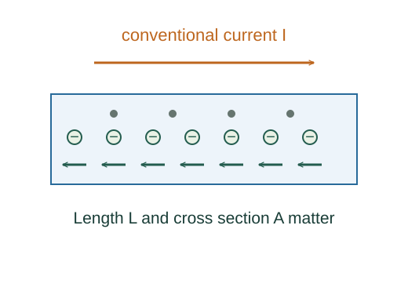

Derive R = ρL/A and Joule heating
A material’s local response to electric field determines its resistivity. Geometry converts that local relation into the terminal resistance of a wire, while energy per transported charge gives electrical power.
What the symbols mean
ρ: electrical resistivity (Ω·m), not mass density here; L: wire length; A: cross section; σ = 1/ρ: conductivity.
When this applies
Uniform straight ohmic conductor at fixed temperature, approximately uniform field and current density. The heating formulas concern a resistive voltage drop.
Developing the argument

State the local material model
Ohm’s local law says current density is proportional to electric field. The proportionality is a measured material property.
Relate local quantities to terminal ones
For a uniform wire, current density is I/A and the voltage-drop magnitude is EL.
Identify resistance
Defining R = ΔV/I gives the geometry dependence. A longer wire has more resistance; a larger cross section provides more parallel conducting area.
Derive power from transferred energy
A charge increment dQ passing through a voltage drop releases energy ΔV dQ. Divide by time and use I = dQ/dt, then substitute Ohm’s law.
A closer lookWhy is current a charge rate? ↗A worked example
A 2 Ω resistor carrying 3 A has a 6 V drop and dissipates 18 W. If its resistance is unchanged and voltage doubles, power quadruples.
Derivation behind this calculation ↗A point to keep straight
R = ΔV/I can be defined for a device, but constant R is the extra ohmic assumption. Heating can change resistivity and resistance.
Check the assumptions and derivation ↗